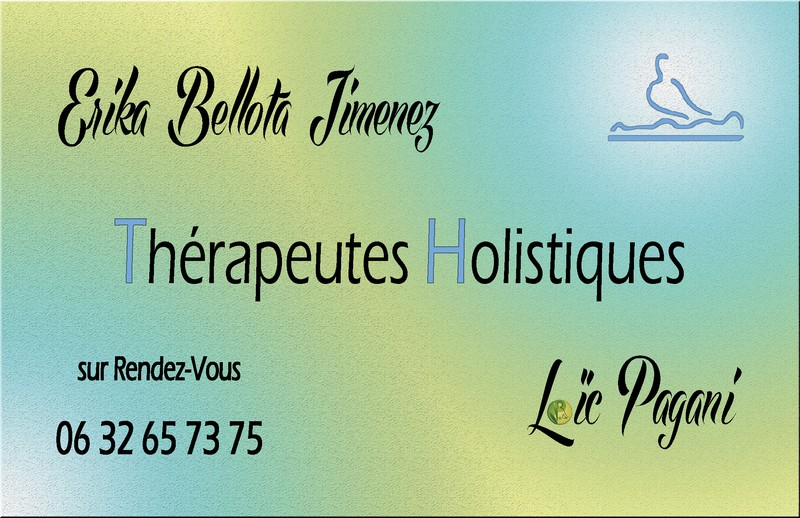

Erika Bellota Jimenez et Loïc Pagani
Holistique vient du Grec "holos" qui signifie : entier
C'est un système de pensée pour lequel les caractéristiques d'un être ou d'ensemble ne peuvent être connues que lorsqu'on le considère et l'appréhende dans son ensemble, dans sa totalité.
Un être ou un ensemble est entièrement ou fortement déterminé par le tout dont il fait partie ; connaître ce tout pour comprendre toutes les propriétés de l'élément ou de l'entité étudiés.
Les cours et traitements
En fonction de la demande et du tout, le choix des outils de travail sont fait pour en proposer la thérapie.
Contact
Erika Bellota Jimenez et Loïc Pagani
SCI Boutières Bien-être.
06.32.65.73.75
.
